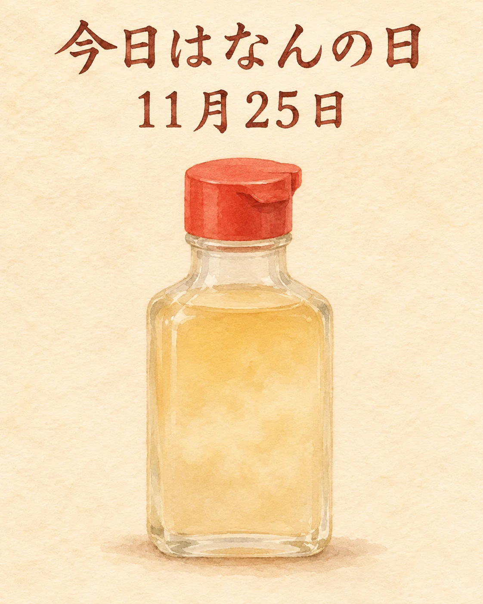

11月25日は「いいにごり酢の日」です🌿
「いい（11）に（2）ご（5）り酢」の語呂合わせから、酢酸菌ライフが制定した記念日。お酢づくりを支える酢酸菌と、にごり酢の文化に目を向ける日です。
にごり酢は、酢酸菌を含むお酢のこと。酢の物や合わせ酢など、和食を支える酸味にも、発酵が育む奥深い世界が広がっています。
日本酒だけでなく、調味料の発酵にも思いを向けながら、日々のひと皿を味わいたいですね。
季節の味わいとともに、心ほどけるひとときをお過ごしください✨
酢と発酵の文化に目を向ける日
酢酸菌ライフの発表では、11月25日を「いいにごり酢の日」とし、酢酸菌やにごり酢の文化を伝える取り組みが紹介されています。2026年も11月25日を記念日として、醸造元から案内が出ています。
キユーピー醸造は、にごり酢を酢酸菌を含むお酢と説明しています。製法や原料、殺菌・保存条件は商品ごとに異なるため、「にごり」という名前だけで生きた菌の有無や保存方法を決めつけることはできません。
和食に使う酢の酸味も、発酵の営みとつながっています。日本酒と料理を大切にする饗応 元の季節日記として、調味料の文化をご紹介します。当日のにごり酢の使用・販売・特別料理や、東京の他団体イベントへの参加を告知するものではありません。
出典：酢酸菌ライフ・記念日制定の発表、酢之宮・2026年11月25日の案内、キユーピー醸造・にごり酢の説明（2026年11月25日確認）。